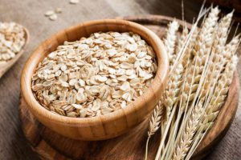

Bài Viết Mới
-
 Tác dụng nấm vân chi
Tác dụng nấm vân chi
Cách đây hơn 2000 năm, nấm vân chi rừng đã được biết đến và sử...
-
 Chả cốm ăn với gì ngon
Chả cốm ăn với gì ngon
Bánh giò Bánh giò là một loại bánh được làm từ bột gạo tẻ...
- 
Yến Mạch Là Gì
Yến mạch là một loại ngũ cốc, thường được trồng ở những vùng khí hậu ôn đới mát mẻ...
-
Cốm tươi làm món gì
Cốm tươi làm món gì ngon Dùng cốm tươi làm món gì, cốm tươi có...
-
 Làm măng tây xào tỏi
Làm măng tây xào tỏi
Nguyên liệu cần để nấu món măng tây xào tỏi 500g măng tây xanh ...
-
 Nấu món súp lơ xanh
Nấu món súp lơ xanh
Súp lơ xanh xào gà Nguyên liệu 600g ức gà; 250g súp lơ xanh...